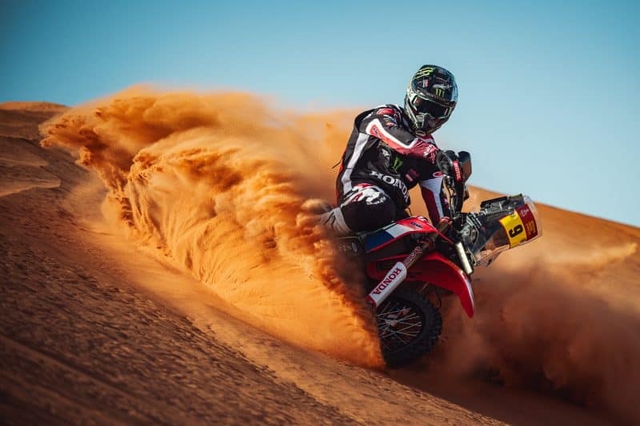
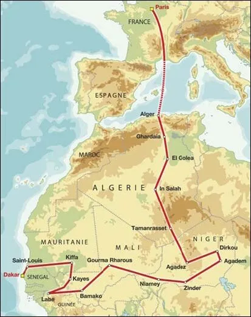

Ruta en el Tiempo

1977
Thierry Sabine se perdió en su moto en el desierto de Libia y decidió compartir su fascinación creando la carrera.

1979
Se da la salida a la primera edición oficial del rally, uniendo París con la mítica meta en Dakar.

Actualidad
El espíritu extremo se traslada a los gigantescos e implacables desiertos de Arabia Saudita.

Primera ruta del Rally Dakar
El trazado original cruzaba múltiples países africanos desafiando la geografía más dura del planeta.

Ruta en la actualidad
Hoy en día, la competencia se disputa completamente en Arabia Saudita, enfrentando dunas colosales y navegación extrema.
Categorias de competicion
En el Dakar compiten diferentes tipos de vehículos adaptados a los terrenos más difíciles.
- Motos La categoría más peligrosa y pura: los pilotos deben manejar y navegar al mismo tiempo, de pie.
- Autos:Vehículos todoterreno de alta tecnología, divididos entre prototipos y coches de serie.
- Camiones:Auténticos gigantes del desierto que, además de competir, muchas veces sirven de asistencia para otros pilotos.
Datos Curiosos
- El amuleto del logo:El famoso logotipo del Dakar representa la silueta de un tuareg (un habitante nómada del desierto del Sahara) cubierto con un turbante o "cheche".
- Sin comodidades: Los pilotos duermen la mayoría de las noches en campamentos itinerantes en medio del desierto llamados "bivouacs", muchas veces en carpas de campaña individuales.
- Una carrera abierta a todos:No necesitas ser un piloto profesional de Fórmula 1 para inscribirte; aproximadamente el 80% de los participantes son entusiastas y aficionados que cumplen el sueño de sus vidas.
- Navegación "a la antigua":Está prohibido usar GPS con mapas comerciales. Los pilotos solo reciben un "roadbook" (libro de ruta) antes de empezar la etapa y deben guiarse usando el odómetro y una brújula.